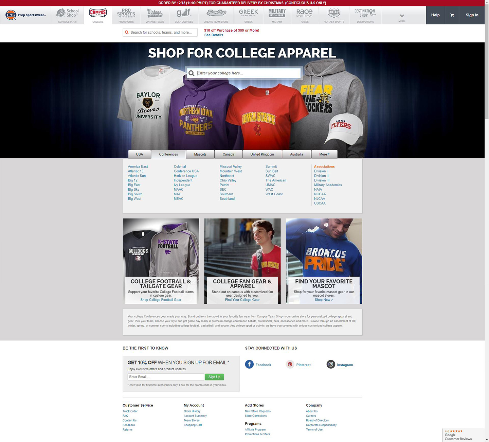

In this project I was seeking to provide a tool that allowed users to collaborate with one another using content found on the web and/or created by the user. It would function as both a searchable hard drive for ease of organization (using metadata tags to enhance the experience), and a tool for sharing things with others in order to build a dialog and create communication.
The problem faced was that there wasn’t a stand-alone tool that did all the things we wanted to provide for the user. The user as a result was forced to used multiple tools to do the different functions OurDrive was seeking to provide. And the user wanted these functions to be as easy and on-the-go as possible. Meaning minimal steps to completing any specific task.
The solution was to provide a tool that stored images, links and notes, all in the same place, and provided the ability to share and collaborate with others on what they had created or found. So I built a drive (or cloud) that was provided the user - with options of different pricing plans based on user needs - in which they could save or upload the content they wanted to hold on to or share. This was done in a simple, familiar (and thus easy to use) folder-structured platform, where the user was easily able to add, organize, sort, edit, and share their content. One of the key takeaways from doing the user interviews was that things had to be as few clicks as possible to complete a task, as this product aimed to save content on the fly.
